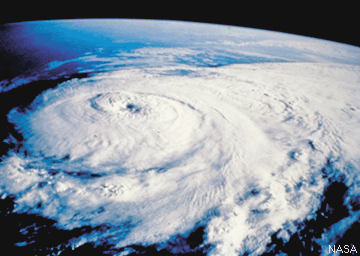

Hurricane Basics
A hurricane is a severe tropical cyclone originating in the equatorial regions of the Atlantic Ocean or Caribbean Sea or eastern regions of the Pacific Ocean, traveling north, northwest, or northeast from its point of origin, and usually involving heavy rains. Hurricanes have a wind speed greater than 74 miles (119 kilometers) per hour, according to the Beaufort scale.
is a severe tropical cyclone originating in the equatorial regions of the Atlantic Ocean or Caribbean Sea or eastern regions of the Pacific Ocean, traveling north, northwest, or northeast from its point of origin, and usually involving heavy rains. Hurricanes have a wind speed greater than 74 miles (119 kilometers) per hour, according to the Beaufort scale.
 The ingredients for a hurricane include a pre-existing weather disturbance, warm tropical oceans, moisture, and relatively light winds aloft. If the right conditions persist long enough, they can combine to produce the violent winds, incredible waves, torrential rains, and floods we associate with this phenomenon.
Each year, an average of ten tropical storms develop over the Atlantic Ocean, Caribbean Sea, and Gulf of Mexico. Many of these remain over the ocean. Six of these storms become hurricanes each year. In an average 3-year period, roughly five hurricanes strike the United States coastline, killing approximately 50 to 100 people anywhere from Texas to Maine. Of these, two are typically major hurricanes (winds greater than 110 mph).